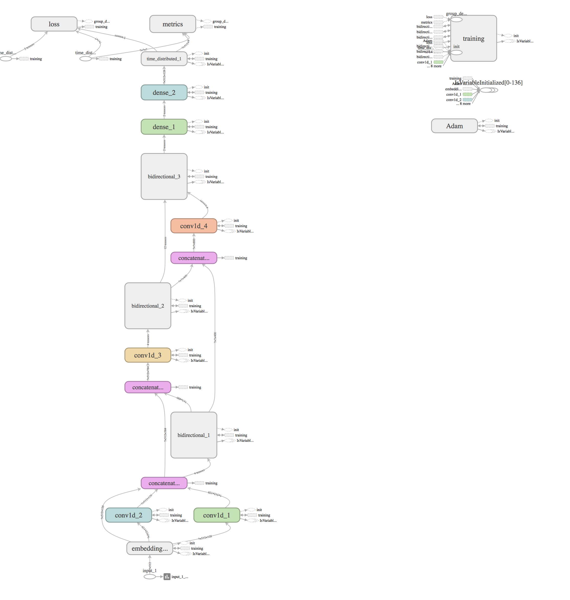

03
The network alternates local extraction and global context
ModelArchitectureParallel convolutions capture motifs at multiple local scales. Bidirectional recurrent blocks then propagate information across the sequence, while concatenation creates explicit skip paths.
3.45m-parameter documented model
Convolution → recurrence → skip → repeat
- 1Embedding: 128-dimensional learned representation.
- 2Local features: parallel Conv1D branches with kernel widths 3 and 5.
- 3Global features: a 200-unit bidirectional GRU.
- 4Refinement: two Conv1D(1)–BiGRU blocks with a skip connection from the first recurrent layer.
- 5Classification: 256- and 128-unit dense layers followed by a nine-way time-distributed softmax.

3bidirectional recurrent layers
4one-dimensional convolutions
3dense/output layers
| Layer group | Output shape | Parameters | Role |
|---|---|---|---|
| Embedding + parallel convolutions | (512, 384) | 134,144 | Learn tokens and local motifs |
| Bidirectional 1 | (512, 400) | 702,000 | First global context pass |
| Conv1D 3 + Bidirectional 2 | (512, 400) | 1,233,700 | Refine concatenated local/global features |
| Conv1D 4 + Bidirectional 3 | (512, 400) | 1,241,700 | Second refinement with skip connection |
| Dense + time-distributed output | (512, 9) | 136,713 | Per-residue classification |
| Total | — | 3,448,257 | Documented architecture |